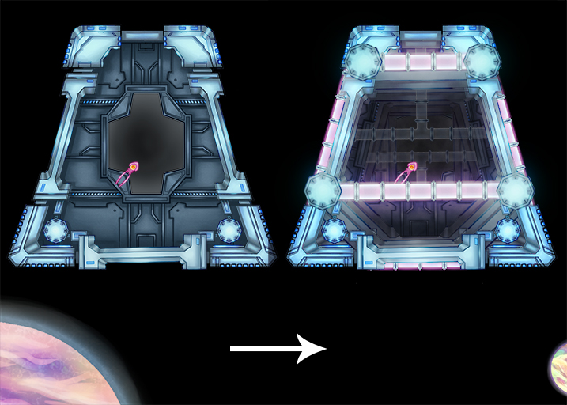

This week I was tasked with making additional VFX and exploring the possibility of adding visual depth to our 2D game. I also worked with one of our great programmers, Tyler, to work on a depth tool to make things go smoothly.
I made 6 VFX effects total. The most interesting were atmospheric smoke effects, Laser bullets, energy spikes, and a ‘bite’ damage effect that plays when our new piranha enemy bites you.
Heres a picture from depth testing:
Overall I’m getting a lot better at making VFX and I’ve had some good new experiences working with other disciplines effectively. We’ve got great organization and planned a lot this week as well. I think we’re doing good work.
Thanks for reading! Connect with us on Twitter, Facebook, or YouTube. To make sure you stay up to date, sign up for our email list!